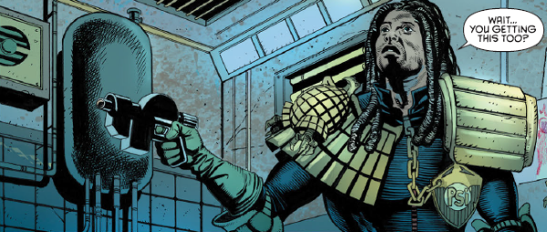

Psi-Judge Flowers is a pre-cog (he has visions of possible futures) who often works alongside Anderson.
Art by David Roach & Jose Villarrubia
| Story Title | Parts | Pages | w indicates a wraparound coverCovers | Year(s) | Issues | Writer | Artist | Colourist | Letterer |
|---|---|---|---|---|---|---|---|---|---|
From Anderson Psi DivisionMutineers | 2 | 18 | M359: Siku 1 | 2015 | M359-M360 | Emma Beeby | Andrew Currie | Eva de la Cruz | Ellie de Ville |
From Anderson Psi DivisionThe Candidate | 7 | 42 | 1993: Christian Ward 1995: Jon Davis‑Hunt 2 | 2016 | Reprints: M410 (supplement)1993-1999 | Emma Beeby | Nick Dyer | Richard Elson | Ellie de Ville |
From Anderson Psi‑DivisionUndertow | 8 | 48 | 2074: Emily Zeinner 2077: Raid71 2080: David Roach and Dylan Teague 3 | 2018 | 2073-2080 | Emma Beeby | David Roach: 1‑4 Mike Collins: 5‑8 Cliff Robinson: 5‑8various | Jose Villarrubia | Simon Bowland |
From Anderson Psi DivisionMartyrs | 8 | 48 | 2137: Tula Lotay 2139: Aneke 2 | 2019 | 2137-2144 | Emma Beeby | Aneke | Barbara Nosenzo | Simon Bowland |
| year | episodes | pages |
| 2007 | 0 | 0 |
| 2008 | 0 | 0 |
| 2009 | 0 | 0 |
| 2010 | 0 | 0 |
| 2011 | 0 | 0 |
| 2012 | 0 | 0 |
| 2013 | 0 | 0 |
| 2014 | 0 | 0 |
| 2015 | 2 | 18 |
| 2016 | 7 | 42 |
| 2017 | 0 | 0 |
| 2018 | 8 | 48 |
| 2019 | 8 | 48 |
| 2020 | 0 | 0 |
| 2021 | 0 | 0 |
| 2022 | 0 | 0 |
| 2023 | 0 | 0 |
| 2024 | 0 | 0 |
| 2025 | 0 | 0 |
| 2026 | 0 | 0 |
| 2027 | 0 | 0 |